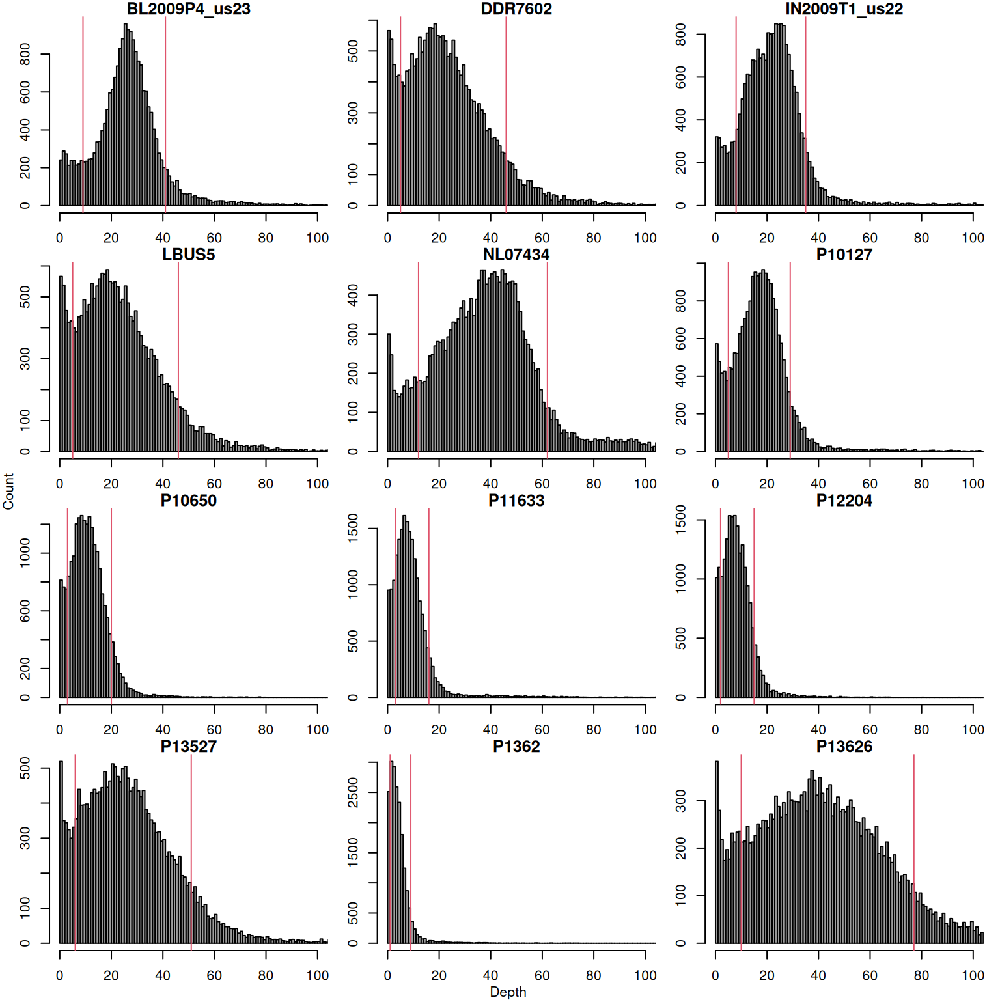
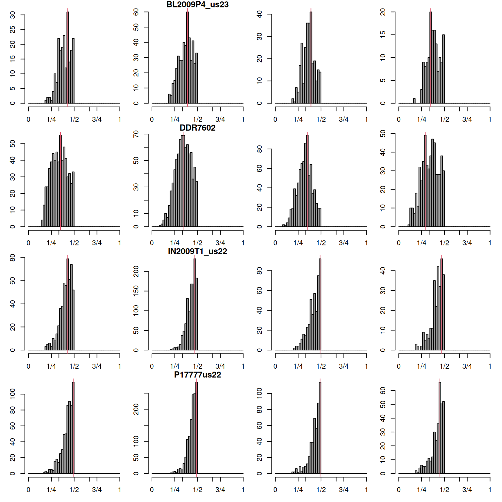
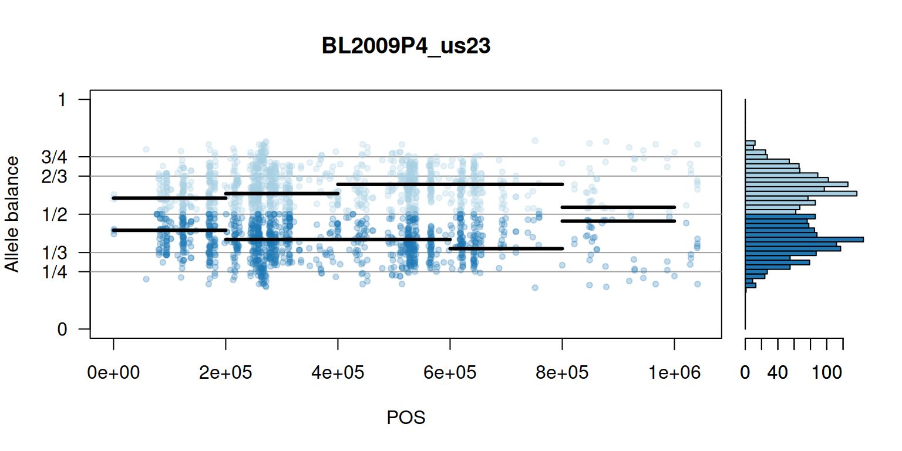
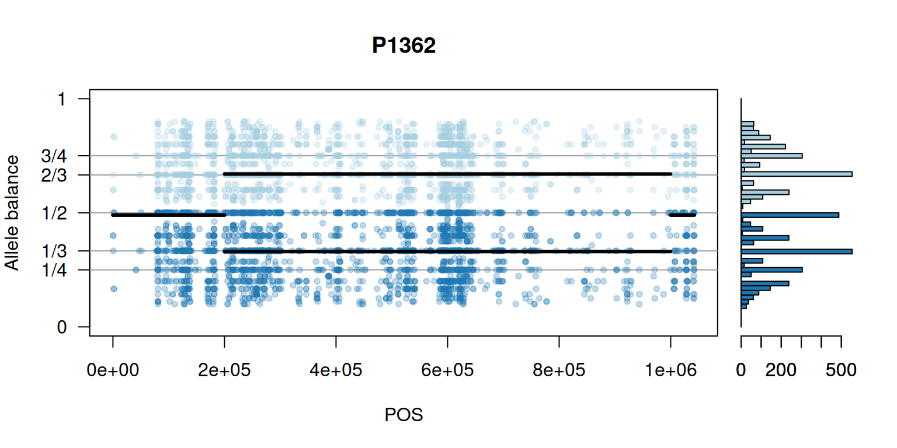
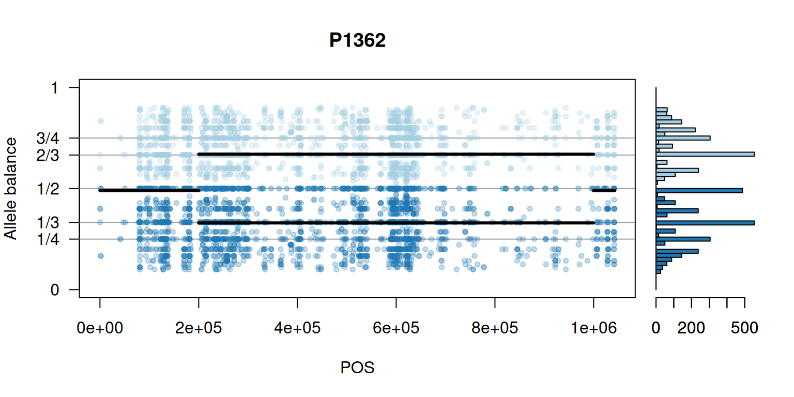
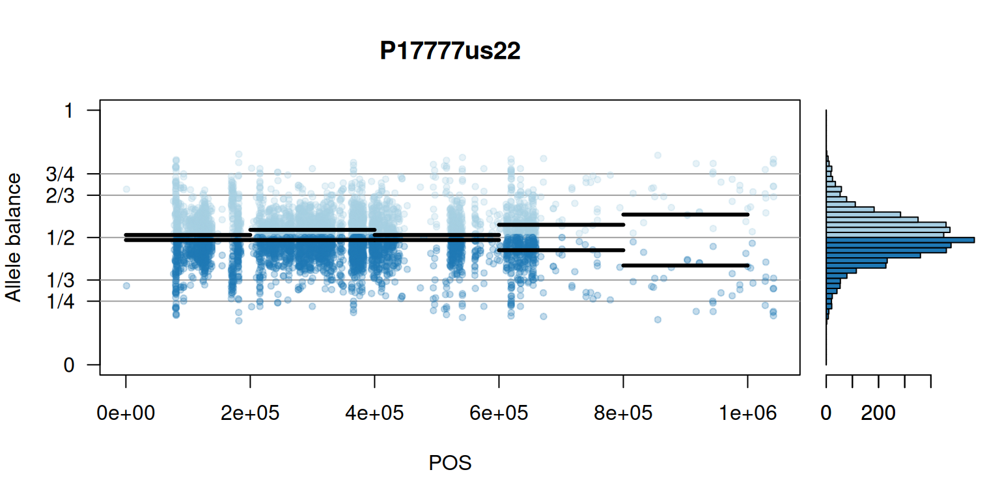
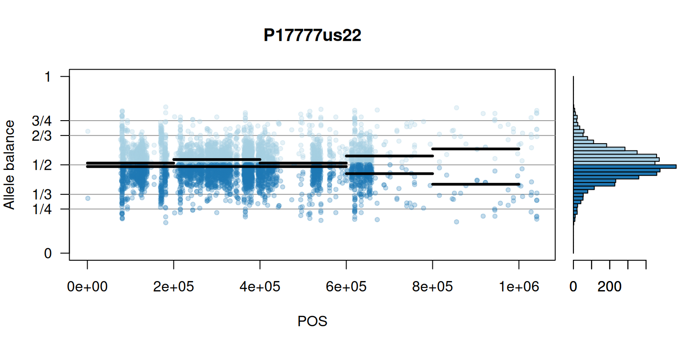
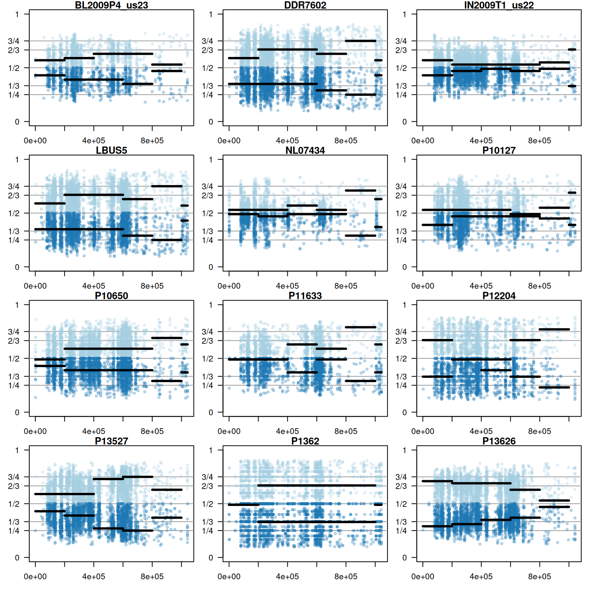

vcfR documentation
byBrian J. Knaus and Niklaus J. Grünwald
Determining ploidy 2
Previously we showed how to create histograms based on the ratio of alleles observed at heterozygous positions. These histograms may present desireable perspectives when a constant ploidy is expected. Investigators interested in whether there is variation in copy number along a chromosome may require a more detailed perspective. Here we present a perspective of copy number variation along the length of a chromosome.
Instead of using all of the data each chromosome can be divided into windows of user specified width. For each of these windows a numerical summary of where the peak would be is made. Creating a numerical summary is important because when we move to genome scale data it is easy to generate more windows than we can manually curate. We can visualize some of this data, but the numerical summary will allow us to process many windows over many samples.
Input data
Data import is performed similar to other examples.
# Load libraries
library(vcfR)
library(pinfsc50)
# Determine file locations
vcf_file <- system.file("extdata", "pinf_sc50.vcf.gz",
package = "pinfsc50")
# Read data into memory
vcf <- read.vcfR(vcf_file, verbose = FALSE)
vcf## ***** Object of Class vcfR *****
## 18 samples
## 1 CHROMs
## 22,031 variants
## Object size: 20.9 Mb
## 7.929 percent missing data
## ***** ***** *****Depth filtering
We’ll also filter on depth by removng high and low coverage variants. The thresholds for this filtering will be determined by quantiles. Researchers may want to explore other methods available in R (e.g., fit a distribution, mixture models, etc.).
First we extract the alleles and create frequencies
ad <- extract.gt(vcf, element = 'AD')
allele1 <- masplit(ad, record = 1)
allele2 <- masplit(ad, record = 2)
ad1 <- allele1 / (allele1 + allele2)
ad2 <- allele2 / (allele1 + allele2)We create thresholds based on the most abundant allele as follows.
dp <- allele1
#sums <- apply(dp, MARGIN=2, quantile, probs=c(0.15, 0.95), na.rm=TRUE)
sums <- apply(dp, MARGIN=2, quantile, probs=c(0.1, 0.9), na.rm=TRUE)
par(mfrow=c(4,3))
par(mar=c(2,2,1,1))
par(oma=c(1,1,0,0))
for(i in 1:12){
hist(allele1[,i], breaks = seq(0,1e3,by=1), xlim=c(0,100), col=8, main="", xlab="", ylab="")
title(main = colnames(allele1)[i])
abline(v=sums[,i], col=2)
}
title(xlab = "Depth", line=0, outer = TRUE, font=2)
title(ylab = "Count", line=0, outer = TRUE, font=2)
par(mar=c(5,4,4,2))
par(oma=c(0,0,0,0))We performa similar operation for the second most abundant allele.
par(mfrow=c(4,3))
par(mar=c(2,2,1,1))
par(oma=c(1,1,0,0))
for(i in 1:12){
tmp <- allele2[,i]
tmp <- tmp[ tmp > 0 ]
hist(tmp, breaks = seq(0,1e3,by=1), xlim=c(0,100),
# ylim=c(0,1000),
col=8, main="", xlab="", ylab="")
title(main = colnames(allele1)[i])
}
title(xlab = "Depth", line=0, outer = TRUE, font=2)
title(ylab = "Count", line=0, outer = TRUE, font=2)
par(mfrow=c(1,1))
par(mar=c(5,4,4,2))
par(oma=c(0,0,0,0))Find peaks of density
In order to avoid assumptions about the distribution of the allele balance ratios we employ a non-parametric method. The data are binned into bins of user specified widths and the bin with the highest density is chosen as the frequency. This is our numerical summary of our peak density and will be retained in a matrix of samples and windows.
# Filter on depth quantiles.
sums <- apply(allele1, MARGIN=2, quantile, probs=c(0.1, 0.9), na.rm=TRUE)
# Allele 1
dp2 <- sweep(allele1, MARGIN=2, FUN = "-", sums[1,])
#allele1[dp2 < 0] <- NA
vcf@gt[,-1][ dp2 < 0 & !is.na(vcf@gt[,-1]) ] <- NA
dp2 <- sweep(allele1, MARGIN=2, FUN = "-", sums[2,])
#allele1[dp2 > 0] <- NA
vcf@gt[,-1][dp2 > 0] <- NA
# Allele 2
dp2 <- sweep(allele2, MARGIN=2, FUN = "-", sums[1,])
vcf@gt[,-1][ dp2 < 0 & !is.na(vcf@gt[,-1]) ] <- NA
dp2 <- sweep(allele2, MARGIN=2, FUN = "-", sums[2,])
vcf@gt[,-1][dp2 > 0] <- NA
# Censor homozygotes.
gt <- extract.gt(vcf, element = 'GT')
hets <- is_het(gt)
is.na( vcf@gt[,-1][ !hets ] ) <- TRUE
# Extract allele depths
ad <- extract.gt(vcf, element = 'AD')
allele1 <- masplit(ad, record = 1)
allele2 <- masplit(ad, record = 2)
ad1 <- allele1 / (allele1 + allele2)
ad2 <- allele2 / (allele1 + allele2)
# Parameters
#winsize <- 1e5
#
winsize <- 2e5
#bin_width <- 0.1
#bin_width <- 0.05
#bin_width <- 0.025
#
bin_width <- 0.02
#bin_width <- 0.01
# Find peaks
freq1 <- ad1/(ad1+ad2)
freq2 <- ad2/(ad1+ad2)
myPeaks1 <- freq_peak(freq1, getPOS(vcf), winsize = winsize, bin_width = bin_width)
#myCounts1 <- freq_peak(freq1, getPOS(vcf), winsize = winsize, bin_width = bin_width, count = TRUE)
is.na(myPeaks1$peaks[myPeaks1$counts < 20]) <- TRUE
myPeaks2 <- freq_peak(freq2, getPOS(vcf), winsize = winsize, bin_width = bin_width, lhs = FALSE)
#myCounts2 <- freq_peak(freq2, getPOS(vcf), winsize = winsize, bin_width = bin_width, count = TRUE)
is.na(myPeaks2$peaks[myPeaks2$counts < 20]) <- TRUEAs a proof of concep we can visualize plots of the major allele with a red horizontal line at our predicted peak. We repeat this for the minor allele.
par(mfrow=c(4,4))
par(mar=c(2,2,1,1))
par(oma=c(1,1,0,0))
mySample <- "BL2009P4_us23"
for(i in 1:4){
hist(freq1[ myPeaks1$wins[i,'START_row']:myPeaks1$wins[i,'END_row'], mySample ],
breaks = seq(0,1,by=bin_width), xlim=c(0,1), col=8, main = "", xaxt='n')
axis(side=1, at=c(0,0.25,0.333,0.5,0.666,0.75,1),
labels=c(0,'1/4','1/3','1/2','2/3','3/4',1), las=1)
abline(v=myPeaks1$peaks[i,mySample], col=2)
if(i==2){ title(main=mySample) }
}
mySample <- "DDR7602"
for(i in 1:4){
hist(freq1[ myPeaks1$wins[i,'START_row']:myPeaks1$wins[i,'END_row'], mySample ],
breaks = seq(0,1,by=bin_width), xlim=c(0,1), col=8, main = "", xaxt='n')
axis(side=1, at=c(0,0.25,0.333,0.5,0.666,0.75,1),
labels=c(0,'1/4','1/3','1/2','2/3','3/4',1), las=1)
abline(v=myPeaks1$peaks[i,mySample], col=2)
if(i==2){ title(main=mySample) }
}
mySample <- "IN2009T1_us22"
for(i in 1:4){
hist(freq1[ myPeaks1$wins[i,'START_row']:myPeaks1$wins[i,'END_row'], mySample ],
breaks = seq(0,1,by=bin_width), xlim=c(0,1), col=8, main = "", xaxt='n')
axis(side=1, at=c(0,0.25,0.333,0.5,0.666,0.75,1),
labels=c(0,'1/4','1/3','1/2','2/3','3/4',1), las=1)
abline(v=myPeaks1$peaks[i,mySample], col=2)
if(i==2){ title(main=mySample) }
}
mySample <- "P17777us22"
for(i in 1:4){
hist(freq1[ myPeaks1$wins[i,'START_row']:myPeaks1$wins[i,'END_row'], mySample ],
breaks = seq(0,1,by=bin_width), xlim=c(0,1), col=8, main = "", xaxt='n')
axis(side=1, at=c(0,0.25,0.333,0.5,0.666,0.75,1),
labels=c(0,'1/4','1/3','1/2','2/3','3/4',1), las=1)
abline(v=myPeaks1$peaks[i,mySample], col=2)
if(i==2){ title(main=mySample) }
}
par(mfrow=c(1,1))
par(mar=c(5,4,4,2))
par(oma=c(0,0,0,0))Second most abundant allele.
par(mfrow=c(4,4))
par(mar=c(2,2,1,1))
par(oma=c(1,1,0,0))
mySample <- "BL2009P4_us23"
for(i in 1:4){
hist(freq2[ myPeaks1$wins[i,'START_row']:myPeaks1$wins[i,'END_row'], mySample ],
breaks = seq(0,1,by=bin_width), xlim=c(0,1), col=8, main = "", xaxt='n')
axis(side=1, at=c(0,0.25,0.333,0.5,0.666,0.75,1),
labels=c(0,'1/4','1/3','1/2','2/3','3/4',1), las=1)
abline(v=myPeaks2$peaks[i,mySample], col=2)
if(i==2){ title(main=mySample) }
}
mySample <- "DDR7602"
for(i in 1:4){
hist(freq2[ myPeaks1$wins[i,'START_row']:myPeaks1$wins[i,'END_row'], mySample ],
breaks = seq(0,1,by=bin_width), xlim=c(0,1), col=8, main = "", xaxt='n')
axis(side=1, at=c(0,0.25,0.333,0.5,0.666,0.75,1),
labels=c(0,'1/4','1/3','1/2','2/3','3/4',1), las=1)
abline(v=myPeaks2$peaks[i,mySample], col=2)
if(i==2){ title(main=mySample) }
}
mySample <- "IN2009T1_us22"
for(i in 1:4){
hist(freq2[ myPeaks1$wins[i,'START_row']:myPeaks1$wins[i,'END_row'], mySample ],
breaks = seq(0,1,by=bin_width), xlim=c(0,1), col=8, main = "", xaxt='n')
axis(side=1, at=c(0,0.25,0.333,0.5,0.666,0.75,1),
labels=c(0,'1/4','1/3','1/2','2/3','3/4',1), las=1)
abline(v=myPeaks2$peaks[i,mySample], col=2)
if(i==2){ title(main=mySample) }
}
mySample <- "P17777us22"
for(i in 1:4){
hist(freq2[ myPeaks2$wins[i,'START_row']:myPeaks1$wins[i,'END_row'], mySample ],
breaks = seq(0,1,by=bin_width), xlim=c(0,1), col=8, main = "", xaxt='n')
axis(side=1, at=c(0,0.25,0.333,0.5,0.666,0.75,1),
labels=c(0,'1/4','1/3','1/2','2/3','3/4',1), las=1)
abline(v=myPeaks2$peaks[i,mySample], col=2)
if(i==2){ title(main=mySample) }
}
par(mfrow=c(1,1))
par(mar=c(5,4,4,2))
par(oma=c(0,0,0,0))Visualization
There are a number of ways to visualize this data. One way is to turn our histogram on its side, as a form of marginal summary, and plot our window summaries.
i <- 2
layout(matrix(1:2, nrow=1), widths = c(4,1))
par(mar=c(5,4,4,0))
mySample <- colnames(freq1)[i]
plot(getPOS(vcf), freq1[,mySample], ylim=c(0,1), type="n", yaxt='n',
main = mySample, xlab = "POS", ylab = "Allele balance")
axis(side=2, at=c(0,0.25,0.333,0.5,0.666,0.75,1),
labels=c(0,'1/4','1/3','1/2','2/3','3/4',1), las=1)
abline(h=c(0.25,0.333,0.5,0.666,0.75), col=8)
points(getPOS(vcf), freq1[,mySample], pch = 20, col= "#A6CEE344")
points(getPOS(vcf), freq2[,mySample], pch = 20, col= "#1F78B444")
segments(x0=myPeaks1$wins[,'START_pos'], y0=myPeaks1$peaks[,mySample],
x1=myPeaks1$wins[,'END_pos'], lwd=3)
segments(x0=myPeaks1$wins[,'START_pos'], y0=myPeaks2$peaks[,mySample],
x1=myPeaks1$wins[,'END_pos'], lwd=3)
bp1 <- hist(freq1[,mySample], breaks = seq(0,1,by=bin_width), plot = FALSE)
bp2 <- hist(freq2[,mySample], breaks = seq(0,1,by=bin_width), plot = FALSE)
par(mar=c(5,1,4,2))
barplot(height=bp1$counts, width=0.02, space = 0, horiz = T, add = FALSE, col="#A6CEE3")
barplot(height=bp2$counts, width=0.02, space = 0, horiz = T, add = TRUE, col="#1F78B4")
par(mar=c(5,4,4,2))
par(mfrow=c(1,1))Once we determine how to make one plot we can loop over all the samples.



 
 



We can also create a matrix of plots.
par(mfrow=c(4,3))
par(mar=c(2,2,1,1))
par(oma=c(1,1,0,0))
for(i in 1:12){
mySample <- colnames(freq1)[i]
plot(getPOS(vcf), freq1[,mySample], ylim=c(0,1), type="n", yaxt='n',
main = mySample, xlab = "POS", ylab = "Allele balance")
axis(side=2, at=c(0,0.25,0.333,0.5,0.666,0.75,1),
labels=c(0,'1/4','1/3','1/2','2/3','3/4',1), las=1)
abline(h=c(0.25,0.333,0.5,0.666,0.75), col=8)
points(getPOS(vcf), freq1[,mySample], pch = 20, col= "#A6CEE344")
points(getPOS(vcf), freq2[,mySample], pch = 20, col= "#1F78B444")
segments(x0=myPeaks1$wins[,'START_pos'], y0=myPeaks1$peaks[,mySample],
x1=myPeaks1$wins[,'END_pos'], lwd=3)
segments(x0=myPeaks1$wins[,'START_pos'], y0=myPeaks2$peaks[,mySample],
x1=myPeaks1$wins[,'END_pos'], lwd=3)
}
par(mfrow=c(1,1))
par(mar=c(5,4,4,2))
par(oma=c(0,0,0,0))We now have a way to create windows of allele balance ratios. We also have several ways to visualize this data. Perhaps most importantly, we have a numerical summary of the peak in each window so we can loop over all of the chromosomes in our reference.
Copyright © 2017 Brian J. Knaus. All rights reserved.
USDA Agricultural Research Service, Horticultural Crops Research Lab.